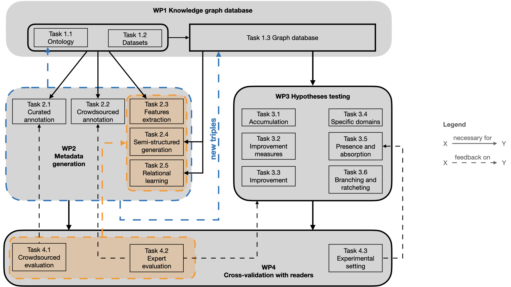

The project
The “Graphs and Ontologies for Literary Evolution Models” is a 5-year (2023-2027) research project funded by the European Commission (ERC StG).
The goal of the project is to create accurate models of how the (formal and content-related) cultural traits of fiction spread and combine. The data used are (fan)fiction stories in 5 different languages (English, Spanish, Italian, Korean, and Indonesian) gathered from various online platforms.
The methodology mainly combines computational literary studies and cultural evolution theory, with influences from fan studies and information science.
The project is hosted by the Center for Langugage and Cognition and the Center for Digital Humanities of the University of Groningen (Netherlands).
Project description
Millions of stories are shared on online platforms such as Wattpad, AO3, and Fanfiction.net, combined with readers’ reactions and comments on these stories. The GOLEM project will analyze stories and their responses gathered from sites in five different languages – English, Spanish, Italian, Korean and Indonesian. This analysis can provide a wealth of information about the characters in a story, the genre, what a story is about, how a story is constructed, what themes are covered, as well as what readers from different countries and cultures find important in a story.
- What (linguistic, stylistic, thematic) elements in a story become popular in different languages?
- What makes a story get read, and what do readers value in a story?
The information we collect with this research makes it possible, with the help of computer models, to find answers to these kinds of questions. The goal is to test hypotheses about cultural evolution and develop a methodology that can also be applied to books from other periods in history. In this way, we can study the evolution of fiction over the centuries, and gain unprecedented insight into something as old as humanity itself: storytelling
Methodology
The goal of GOLEM is to model the evolution of fiction in the context of digitalized and datafied culture, the so-called “digital literary sphere”. We will pursue this goal combining tools from computational literary studies and cultural evolution research. The outcomes of the project will be:
- a knowledge graph database with interlinked metadata about millions of stories (shared online between 2000 and 2021) and readers’ response to them;
- new formal models (theoretical and computational) to study fiction and reader response;
- an evolutionary account of how fiction evolves in terms of formal features and its effect on readers.
The GOLEM workflow will consist of four work packages:
- WP1. Knowledge graph database: the organization, interlinking, and storage of metadata about stories (stylistic elements, themes, etc.) and reader response (emotions felt, etc.) into a knowledge graph.
- WP2. Metadata generation: the generation of new metadata about textual features and reader response through modelling and machine learning. These metadata will then enrich the graph database.
- WP3. Hypotheses testing: the testing of evolutionary hypotheses using the knowledge graph database to select predictors and target variables of statistical models, and to create evolutionary models.
- WP4. Cross-validation with readers: the empirical qualitative and quantitative cross-validation with readers of the results from previous WPs, also in controlled experiments.
“Metadata” (or “derivative data”) are all the descriptive or evaluative attributes assigned to a story, by lay readers, experts, or machines. Hence, metadata encode information related to cultural traits as various as genre, style, sentiment, themes, ratings, readers’ emotional response, etc., which will be stored in a graph database (WP1) in the form of statements (triples) of the kind: story1, is_instance_of, genre_romance, comment9, is_response_to, story1, and empathy, is_expressed_in, comment9. Metadata are an essential part of the GOLEM methodology, since they will be used as parameters when modelling the effects of fiction and its evolution (WP3). Therefore, besides the metadata collected from various datasets, additional metadata will be generated (WP2), in manual or automated ways, from stories and comments/reviews. These additional metadata will belong to classes defined in an ontology (developed in WP1), and they will mainly concern five aspects: genre, story elements, topics, stylistic elements, engagement. Eventually, they will be included in the graph database and linked to the appropriate stories, enriching their schematic representation and offering more parameters to create statistical models and test evolutionary hypotheses (WP3).
Metadata will be generated (WP2) for both textual features and reader response features, and used (WP1) for two purposes: (i) to identify new cultural traits that could be added as classes of the GOLEM ontology and better describe stories; (ii) to expand the GOLEM knowledge graph by linking the stories in the datasets to the classes of the ontology. Then the knowledge stored in the graph database will be used to test evolutionary hypotheses (WP3), verifying the quality of methodology and results thanks to regular assessments and experiments in controlled conditions (WP4).

Diagram of the project overall workflow. I highlighted in orange the process of assessment of metadata quality, which is part of the risk management strategy. Blue arrows indicate the process through which the graph database is continuously enlarged and enriched.
The representation of a story in a graph database is different from its representation as a digital edition with textual encoding (e.g. using TEI-XML). In a digital edition, the text-as-an-object is the starting point and the TEI version is a machine-readable description of it. In a knowledge graph, there is no centre, it is a network of interlinked data. Or, if we consider the text of a story as “data”, then the knowledge graph is a network of metadata describing various aspects of the text. A graph is a model of the text, generated according to some predefined rules that record the textual information and transform it into statements (triples). As such, a graph is a model based on some interpretative rules, which are declared openly (and recorded in the database) and thus allow for a transparent reconstruction of the process that led to a certain interpretation. But GOLEM also adopts a broader perspective – following the tradition of reception theory – and considers a story not as an isolated system but rather as part of a system of which the reader is also part. The GOLEM knowledge graph will be an innovative way of modelling stories as part of a social system, in which readers are represented as interacting with stories and between them, talking about stories.
Similar projects: